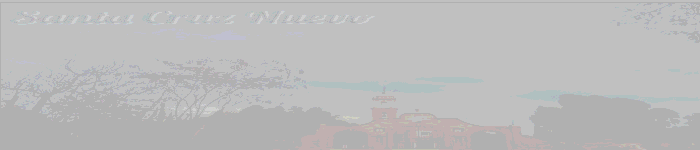

|
|  |
| Principal | Santa Cruz Nuevo es un pueblito ubicado en
La localidad de Santa Cruz Nuevo pertenece al Municipio de Totoltepec de Guerrero (Estado de Puebla). Hay 198 habitantes y está a 1,522 metros de altura. En la lista de los pueblos más poblados de todo el municipio, es el número 2 del ránking. Geografía La localidad Santa Cruz Nuevo es parte del Municipio de Totoltepec de Guerrero, está situada en el estado de Puebla (PU) en México. Las coordenadas del satélite de Santa Cruz Nuevo son: latitud 18°17'44"N y longitud 97°48'36"W Hay 3879 lugares (ciudad, ciudades, aldeas …) dentro de un radio de 100 kilómetros / 62 millas del centro de Santa Cruz Nuevo (PU), el lugar más cercano en la zona es Santo Domingo Tianguistengo, Oaxaca. A continuación se muestra la tabla con los 51 lugares cerca de Santa Cruz Nuevo (PU). En la tabla se indican: nombre del lugar, admin, distancia[1] en kilómetros, distancia[1] en millas y el acoplamiento a la hoja del recorrido con la ruta del camino.. |
 |